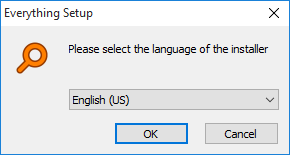
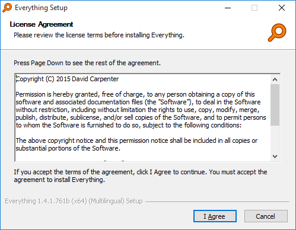
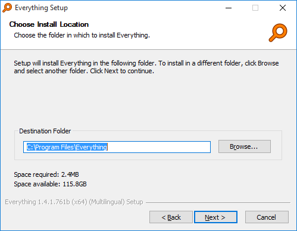
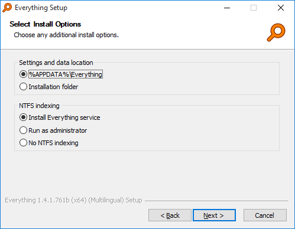
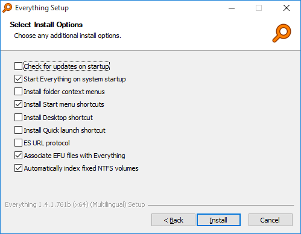
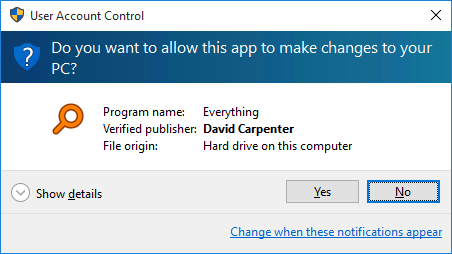
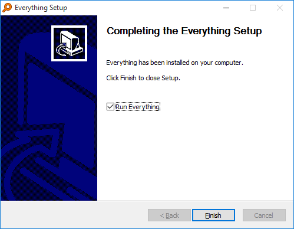

Everything can be installed or run as a portable executable.
The installer and portable version of Everything can be found on the downloads page.
| Version | Description |
|---|---|
| Installer | The installer version will guide the user through the installation of Everything (recommended). The installed Everything.exe is the same as the portable Everything.exe. |
| Portable | The user must extract the Everything.exe to the desired location. No changes to the system are made. Most of the options in the installer are available in the portable version in the Everything Options. |
| x86 | Only x86 context menu extensions will work in Everything. This version will work on both x86 and x64 versions of Windows. |
| x64 | The x64 version requires a 64bit x64 OS. Supports databases larger than 2GB. Only x64 context menu extensions will work in Everything. The x64 version will use more memory than the x86 version. |
| English (US) | Only English is available for this version, the language pack can be installed manually. |
| Multilingual | Includes the Everything language pack for multiple language support. |

Choose the language of the installer. This language will also be used in Everything.
See Supported Languages for a list of supported languages.

You must accept the agreement to install Everything.
You can find a copy of the license here.

Choose the installation location of Everything.
By default Everything is installed to:
C:\Program Files\Everything
or if you install the x86 version of "Everything" on a x64 OS:
c:\Program Files (x86)\Everything

Choose a location to store data and settings.
%APPDATA%\Everything is recommended.
This setting can be changed in the Everything options at anytime.
Choose a method for indexing NTFS volumes
| Method | Description |
|---|---|
| Install Everything service | Install the Everything service which will do all the low level volume reading required for NTFS indexing. The service runs with the necessary privileges so the Everything client can run as a standard user account. |
| Run as administrator | Run Everything with administrative privileges. |
| No NTFS indexing | Everything will not attempt to index NTFS volumes. |
This setting can be changed in the Everything options at anytime.

| Option | Description |
|---|---|
| Check for updates | Enabling this setting will make Everything check www.voidtools.com for updates when you run Everything. |
| Start Everything on system startup | Run Everything when Windows starts. This will load the Everything database into memory and create the Everything tray icon. |
| Install folder context menus | Enabling this will show the context menu item "Search Everything..." when you right click a folder in Windows. Clicking on this context menu item will show the Everything window with the search set to the selected folder. |
| Install start menu items. | Creates the Search Everything and Uninstall Everything shortcuts in the Start menu. |
| Install Desktop shortcut | Creates the Search Everything shortcut on the Desktop. |
| Install Quick launch shortcut | Creates the Search Everything shortcut in the Quick launch toolbar. |
| ES URL Protocol | Open Everything from es: urls. |
| Associate EFU files with Everything | Associate Everything file lists (EFU files) with Everything. |
| Automatically index fixed NTFS volumes | If enabled Everything will automatically add all NTFS volumes to the index. Disable to manually setup which volumes are included. |
These settings can be changed in the Everything options at anytime.

Everything installation requires administrative privileges.
Click Yes to continue installation with administrative privileges.

The installation of Everything is complete. Click Finish to launch Everything.
When Everything launches it will begin creating the initial index which will take a few seconds.
For a basic guide on using Everything, please see Using Everything.
| Error | Description |
|---|---|
| OS is not x64 Install anyway? | This error is displayed when attempting to install the x64 version of Everything on a 32bit OS. Please make sure you have the correct x86 or x64 version of Everything for your OS (See What version of Everything should I download?). |
| Failed to execute admin command | The installer failed to run Everything as an administrator to make changes to the system. Please make sure Everything can run with elevated privileges. |
| Failed to execute user command | The installer failed to run Everything to install the options for the current user. This could be due to anti-virus software. Please make sure the installer can execute Everything from the temp directory. |